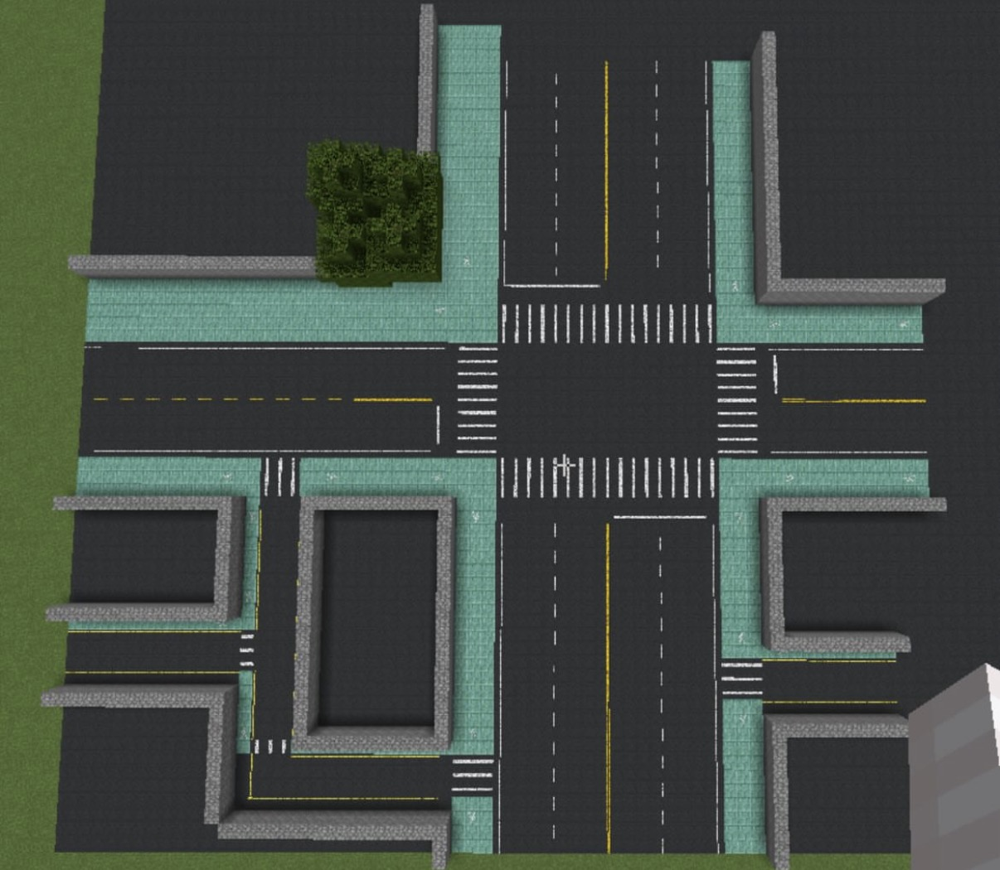
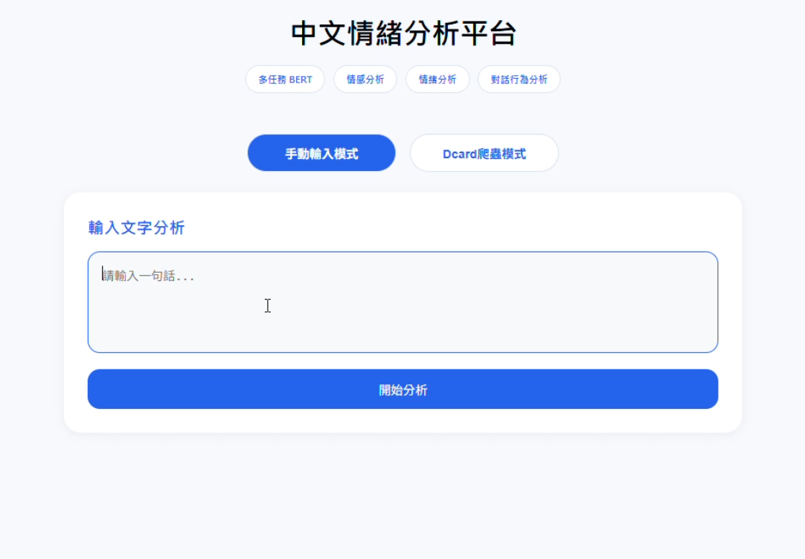
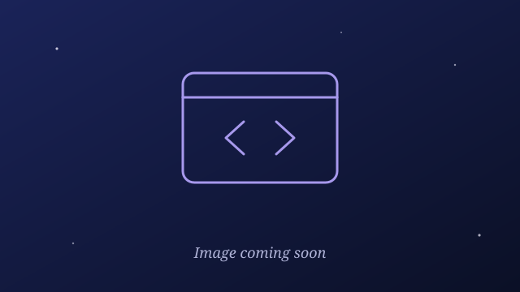

Welcome to my little universe.
Doris Yin A spark isn't a soul's purpose
在學習與探索的路上，收藏喜歡的事物，也記錄那些平凡卻特別的瞬間
Explore MoreAbout Me
關於我
Still Exploring🌙
目前讀人工智慧學系，也正在接觸更多實際的軟體開發工作
我喜歡接觸不同的事物，從程式開發到生活中的各種興趣，慢慢找到自己真正喜歡的方向
除了技術，我也想看看更大的世界、去更多沒去過的地方
這裡記錄著我做過的事，以及接下來想嘗試的可能
- AI & Coding
- Travel & Photography
- Music & Memories
Projects
技術作品
學校作品、專題與個人開發成果。詳細內容與成果會陸續補上。


＊GitHub 按鈕目前連到個人首頁，待專案公開後可改為各專案的 Repository 連結。
Learning Journey
學習歷程
Machine Learning & RL
機器學習與強化學習
Computer Vision
電腦視覺與影像處理
Natural Language Processing
自然語言處理
AI Application Development
人工智慧應用開發
-
大學學習 University
就讀淡江大學人工智慧學系，從 Python 程式設計、 機器學習到深度學習，透過課堂作業累積實作經驗。
-
專題實作 AI Projects
嘗試不同領域的 AI 應用，包含影像處理、 物件辨識、Minecraft 強化學習道路導航， 以及中文多任務語意分析。
-
企業實習 Internship
接觸實際的軟體開發環境，學習如何分析需求、 排查問題，並累積系統開發經驗。
-
自主開發 Independent Development
自主開發長者智慧異常路徑分析平台， 透過 GPS 路徑資料與 GMM 建立個人化活動模型， 進行異常行為偵測與風險分級， 並結合 LLM 進行生活型態分析與摘要生成。
-
持續探索 Currently Exploring
目前正在學習 LLM、LangGraph 與 AI Agent， 也透過建立個人網站，整理過去的作品與學習紀錄。
My Interests
個人興趣
程式之外的我。之後會把這些主題慢慢長成獨立頁面。
Anime & Stories
喜歡的動畫與影劇，例如名偵探柯南、迪士尼。
心得整理中Music
喜歡 Super Junior，也珍惜每一場演唱會與音樂帶來的回憶。
回憶整理中Travel
旅行紀錄、旅遊照片與心得，把路上的風景留下來。
即將更新Photography
使用 Nikon Z fc 拍攝，喜歡記錄旅行、人像與日常風景。
作品整理中Contact
聯絡方式
-
GitHub
github.com/DorisYin329 -
Email
待補（尚未設定） -
Social
待補（尚未設定）